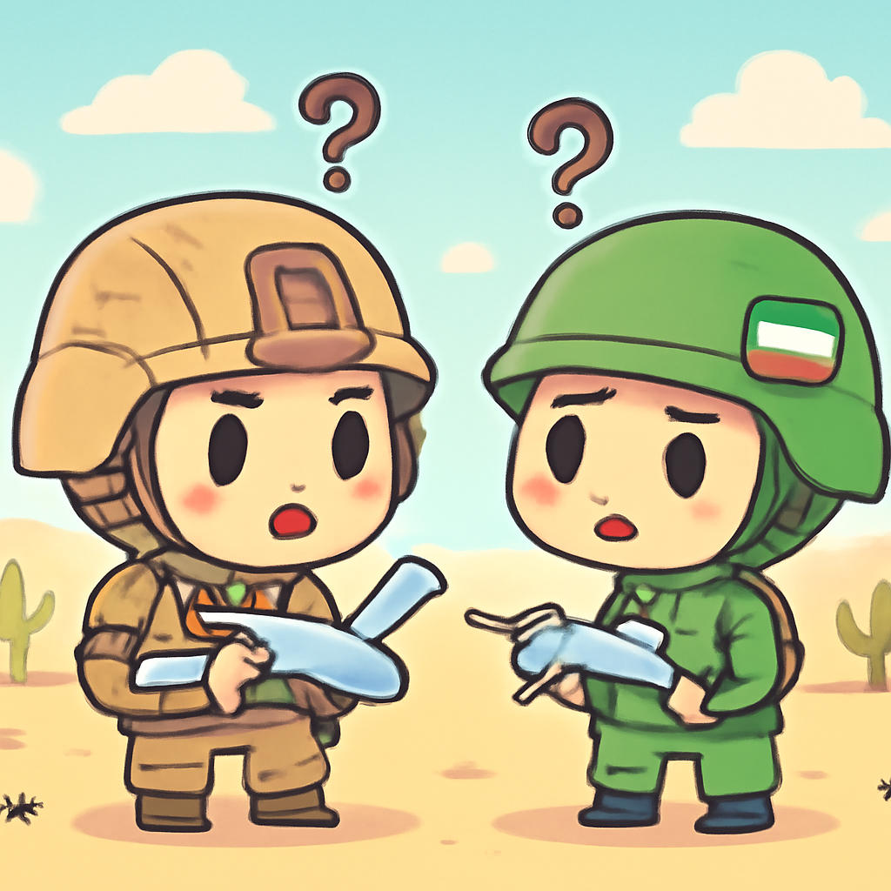
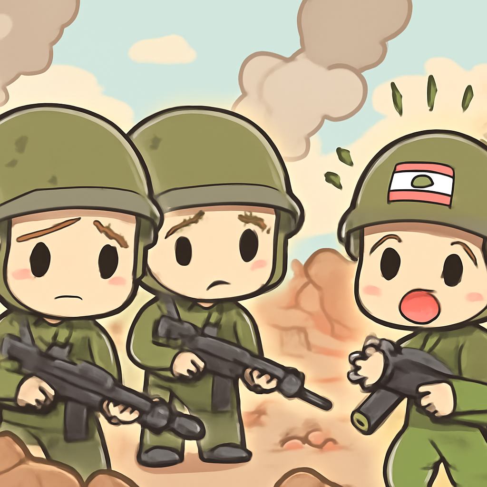
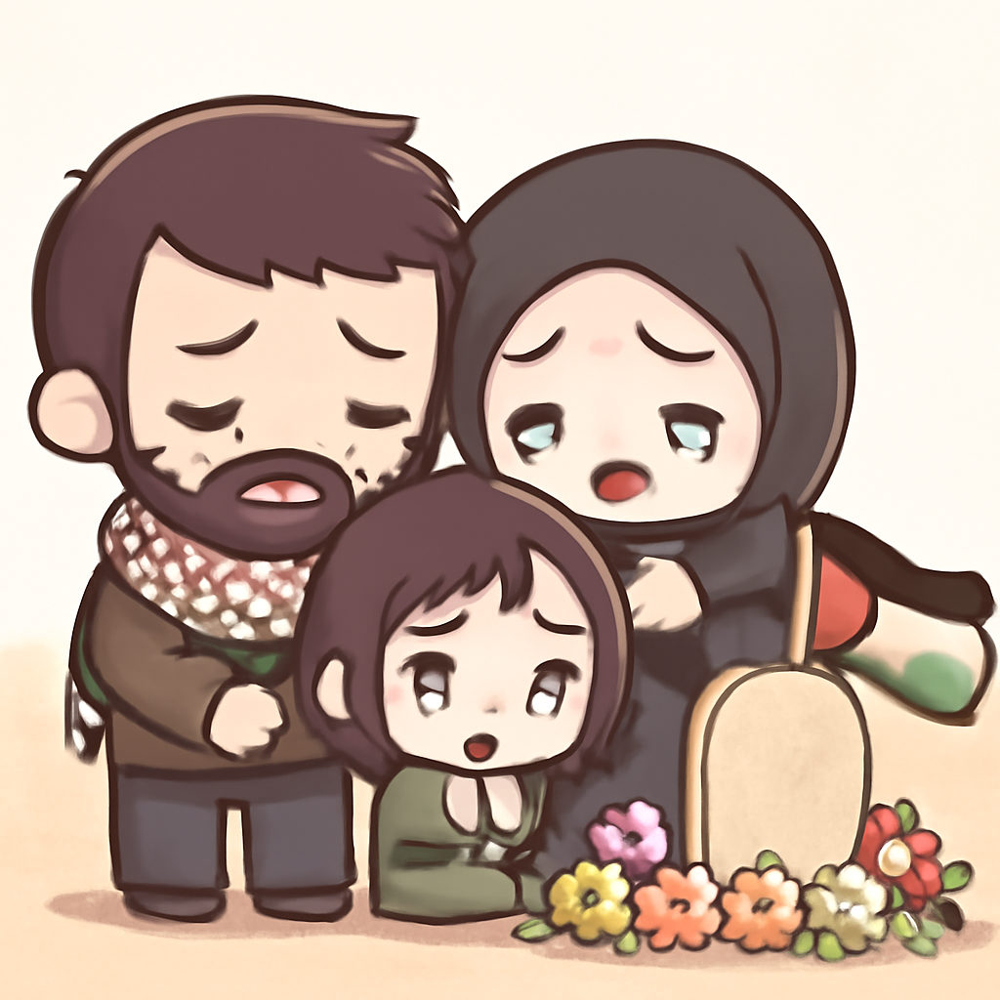

其一 · 俄羅斯聖彼得堡 · 烏克蘭無人機攻擊城市
烏克蘭無人機首次襲擊聖彼得堡，俄方呼籲民眾避難。
在俄羅斯聖彼得堡，烏克蘭無人機發動了前所未有的攻擊，這是戰爭以來首度威脅到該城市的居民。當局呼籲居民待在室內，這讓許多當地人感受到了一種不安的緊張氣氛。這次攻擊不僅是戰爭的擴大，也提醒了大家，戰事的影響已經波及到平民生活。希望大家都能安全，畢竟待在家裡的時候，至少可以安心追劇。
🔗 原始新聞 ↗
2026-06-07 · 以古觀今，以笑抗愁
烏克蘭無人機首次襲擊聖彼得堡，俄方呼籲民眾避難。
在俄羅斯聖彼得堡，烏克蘭無人機發動了前所未有的攻擊，這是戰爭以來首度威脅到該城市的居民。當局呼籲居民待在室內，這讓許多當地人感受到了一種不安的緊張氣氛。這次攻擊不僅是戰爭的擴大，也提醒了大家，戰事的影響已經波及到平民生活。希望大家都能安全，畢竟待在家裡的時候，至少可以安心追劇。
🔗 原始新聞 ↗
美軍和伊朗在海灣地區互相發動攻擊，局勢再度緊張。

在海灣地區，美國軍方對伊朗的無人機和雷達設施發動攻擊，而伊朗則回擊美軍在科威特和巴林的基地。這場衝突是對停火協議的重大挑戰，讓人擔心局勢會惡化，尤其是在兩國之間的緊張關係已經持續了多年。看來，這場地區的「互尻」似乎還沒有結束，大家不妨準備好爆米花，緊盯局勢發展。
🔗 原始新聞 ↗
以色列軍隊在黎巴嫩發動攻擊，造成三名士兵喪生。

在黎巴嫩，三名士兵因以色列軍隊的攻擊而喪生，這使得本已緊張的局勢更加複雜。以色列軍方正在調查事件，並對外宣稱這一行動是針對哈茲波拉的戰鬥。這突顯了中東地區的緊迫性，隨時可能引發更大規模的衝突。看來，這片土地上，和平依舊是個遙不可及的夢想。
🔗 原始新聞 ↗
以色列軍方開火事件，導致一名嬰兒不幸喪生。

在以色列控制的西岸地區，七個月大的嬰兒因為以色列軍隊的開火而不幸喪生，引發了國際社會的譴責。事件發生時，嬰兒的祖母在車內，對軍方的說法提出了異議，認為並不存在威脅。這類事件持續發生，讓人對當地的安全局勢感到憂慮，和平的希望似乎又一次被擊碎了。希望未來能有更多的對話，而不是槍聲。
🔗 原始新聞 ↗
教宗在西班牙讚揚該國對和平及移民的支持。
教宗在西班牙展開為期七天的訪問，首日便讚揚了西班牙對於和平的積極承諾與對移民的支持。這不僅是對當地文化的肯定，也希望能引發更多國際社會對這些議題的重視。隨著局勢緊張，這樣的聲音或許能成為一劑良藥，讓人對未來的和平多一些期待。希望教宗能在西班牙找到更多的靈感，帶著正能量回去！
🔗 原始新聞 ↗